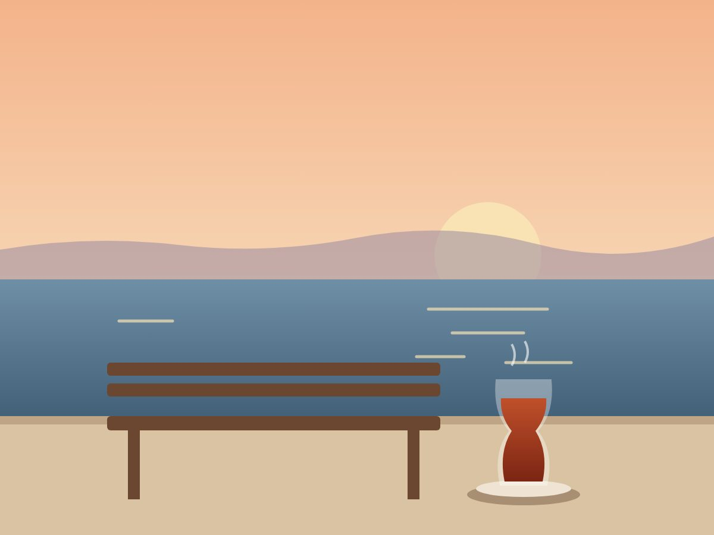
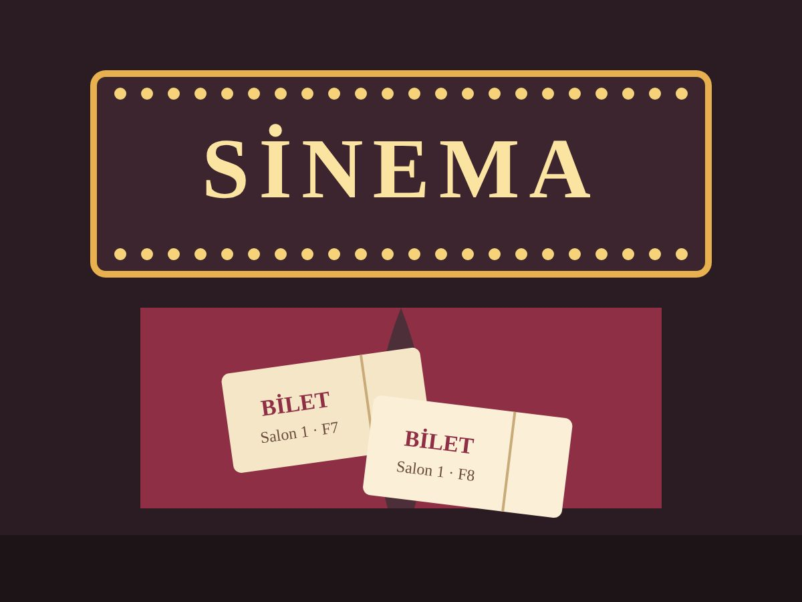
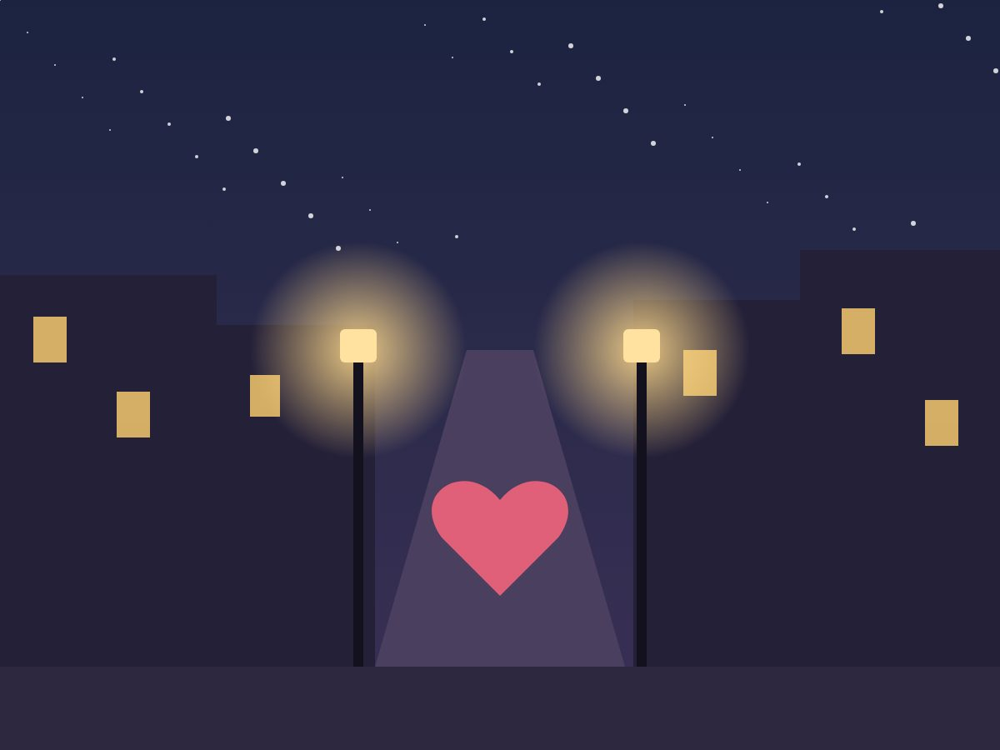
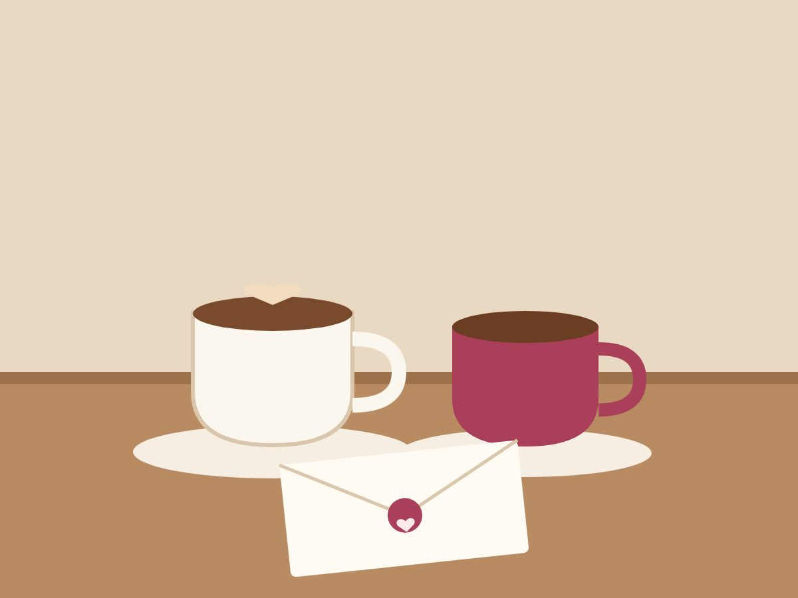

1. durak · soru"O gün ne içiyorduk?"
Moda sahilindeki bank
Sevdiğin kişiyi ilk tanıştığınız yere, ilk kahvenizi içtiğiniz köşeye götür. Her durakta senin bıraktığın bir fotoğraf, bir not ya da sesin açılsın. Yolculuğun sonunda seni bulsun.
Bütün yolculuğu telefonundan hazırlarsın. Ona sadece bir bağlantı gider.
3 ile 7 arasında yer belirle: tanıştığınız kafe, ilk yürüyüşünüz, sizin sahiliniz. Her durağa sadece ikinizin anlayacağı bir ipucu yaz.
Her durakta açılacak fotoğrafı, notu ya da sesli mesajını ekle. Durak bir soruyla, oraya varınca konumla ya da oraya bıraktığın gizli bir kodla açılsın.
WhatsApp'tan gönder ya da QR kartı çiçeğin arasına koy. O yolculuğa çıksın; sen son durakta, "Arkana dön" yazısı belirdiğinde orada ol.
Ana sayfadaki telefonda bu yolculuğu kendin oynayabilirsin.

1. durak · soru"O gün ne içiyorduk?"
Moda sahilindeki bank

2. durak · gizli kodGişedeki kişiye adını söyle, sana bir kod verecek.
İlk film gecesi

3. durak · dokunİlk kez "seni seviyorum" dediğim yerdeyim. Gel.
Son ipucu

Son durakArkana dön.
Sen oradasın.
Tanıştığınız yerden bugüne, birlikte yürüdüğünüz yolu yeniden yürüyün.
"Her şey bu bankta başladı."
Hikâyenizin duraklarından geçen bir yolculuk. Son durakta sen ve yüzük.
"Arkana dön."
İpuçlarıyla dolu bir gün; arkadaşların her durakta bir mesaj bırakır, sonunda parti.
"İyi ki doğdun!"
Bütün yolculuğu hazırlayıp kendin deneyebilirsin. Ödeme sadece göndermeden önce.
Küçük bir sürpriz için
Yıldönümü ve özel günler için
Teklif ve büyük anlar için
Kod kullanılmadıysa 14 gün içinde koşulsuz iade. Yolculuk bizden kaynaklanan bir sorunla çalışmazsa ücretin tamamı iade edilir.
Hayır. Gönderdiğin bağlantıya dokunması yeterli; telefonun tarayıcısında açılır. İnternetinin açık olması yeterli.
Yolculuk takılmaz. Konumla açılan duraklarda iki denemeden sonra "Buradayım" ile devam edebilir. İstersen durakları soru, kod ya da dokunuşla açılacak şekilde de hazırlayabilirsin.
Büyük/küçük harf, Türkçe karakterler ve küçük yazım hataları sorun olmaz: "Çay", "cay" ve "ÇAY" hepsi doğru sayılır. Bir yardım ipucu ekleyebilirsin; 3 yanlıştan sonra cevabı görüp devam edebilir.
Evet. "Dene" düğmesiyle yolculuğu onun göreceği şekilde baştan sona oynarsın. Denemen onun yolculuğunu etkilemez.
Evet. O yolculuğu bitirene kadar mesajları, fotoğrafları ve ipuçlarını düzeltebilirsin; değişiklik anında yansır.
Yolculuğunu hazırlayıp "Gönder"e bastığında bize WhatsApp ya da Instagram'dan yazarsın. Ödemenin ardından paket kodun hemen gelir; kodu girince bağlantın gönderime hazır olur.
Yolculuğunu yalnızca bağlantıyı bilen kişi açabilir. Bağlantı tahmin edilemeyecek kadar uzundur ve fotoğraflar arama motorlarında görünmez. Ayrıntılar gizlilik sayfasında.
Hazırlamak ücretsiz. Beğenmezsen hiçbir şey ödemezsin.